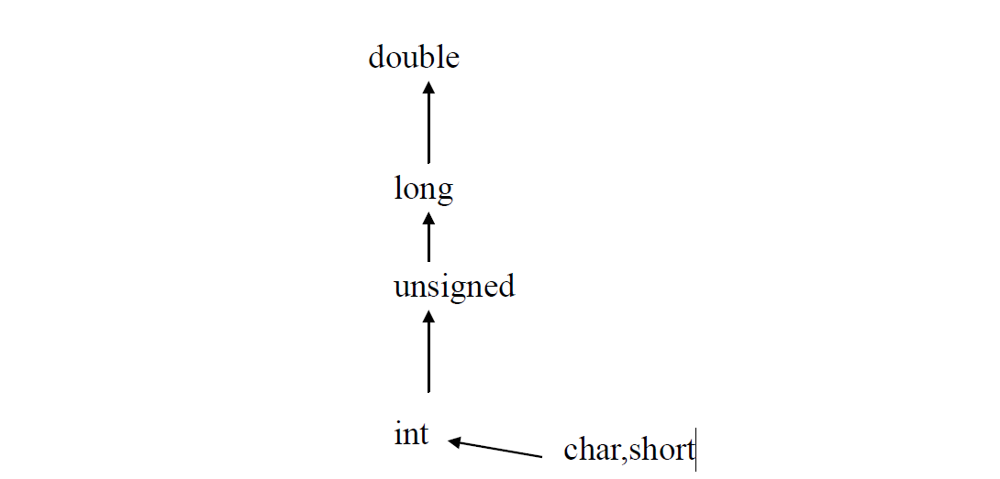

变量的数据类型是可以转换的。转换的方法有两种，一种是自动转换，一种是强制转换。自动转换发生在不同数据类型的量混合运算时，由编译系统自动完成。自动转换遵循以下规则：
1) 若参与运算量的类型不同，则先转换成同一类型，然后进行运算。
2) 转换按数据长度增加的方向进行，以保证精度不降低。如int型和long型运算时，先把int量转成long型后再进行运算。
3) 所有的浮点运算都是以双精度进行的，即使仅含float单精度量运算的表达式，也要先转换成double型，再作运算。
4) char型和short型参与运算时，必须先转换成int型。
5) 在赋值运算中，赋值号两边量的数据类型不同时，赋值号右边量的类型将转换为左边量的类型。如果右边量的数据类型长度左边长时，将丢失一部分数据，这样会降低精度，丢失的部分按四舍五入向前舍入。
